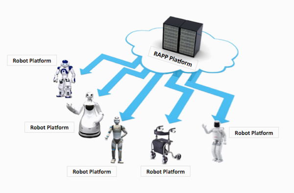

What is RAPP?
RAPP is a 3-year research project (2013-2016) funded by the European Commission through its FP7 programme. The RAPP project will provide an open source software platform to support the creation and delivery of robotic applications. These robotic applications are in turn expected to increase the versatility and utility of service and assistive robots. The emphasis of this project will be on applications that will enable robots to understand and respond to the intentions and needs of people at risk of exclusion, and especially the elderly. Its objectives are:- Provide an infrastructure for developers of robotic applications, so they can easily build and include machine learning and personalization techniques to their applications.
- Create a repository from which robots can download Robotic Applications (RApps) and upload useful monitoring information.
- Develop a methodology for knowledge representation and reasoning in robotics and automation, which will allow unambiguous knowledge transfer and reuse among groups of humans, robots, and other artificial systems.
- Create RApps based on adaptation to individuals and taking into account the special needs of elderly people, while respecting their autonomy and privacy.
- Validate this approach by deploying appropriate demos to demonstrate the use of robots for health and motion monitoring, and for assisting technologically illiterate people or people with mild memory loss.
Cloud robotics
As stated in Wikipedia:Cloud robotics is a field of robotics that attempts to invoke cloud technologies such as cloud computing, cloud storage, and other Internet technologies centred on the benefits of converged infrastructure and shared services for robotics.
What is RAPP Platform?
RAPP Platform is a collection of ROS nodes and back-end processes that aim to deliver ready-to-use generic services to robots. The main concept of RAPP Platform aligns with the cloud robotics approach. RAPP Platform is divided in two main parts: the ROS nodes functionalities and the HOP services. The ROS nodes are back-end processes the provide generic functionalities, such as Image processing, Audio processing, Speech-to-text and Text-to-speech, Ontology & Database operations, as well as ML procedures.
The second part consists of the various HOP services, which are the front-end of the RAPP Platform. These expose specific RAPP Platform functionalities to the world, thus any robot can call specific algorithms, making easy the work of developers.